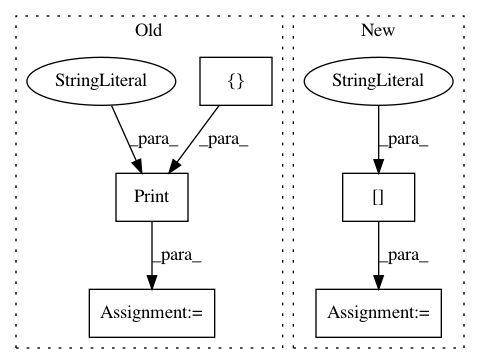

a7ca1cd1b97a84840ee1675e5e1c331f1a5ecd0b,tensorforce/core/memories/prioritized_replay.py,PrioritizedReplay,tf_update_batch,#PrioritizedReplay#Any#,392
Before Change
y=tf.zeros(shape=tf.shape(input=self.batch_indices), dtype=tf.int32)
)
priority_indices = tf.squeeze(tf.where(condition=mask))
priority_indices = tf.Print(priority_indices, [priority_indices], message="Priority indices")
sampled_batch = self.tf_retrieve_indices(
buffer_elements=self.last_batch_buffer_elems,
priority_indices=priority_indices
)
After Change
assignments = list()
// These are the new priorities of the elements already in the memory.
main_memory_priorities = priorities[0:tf.shape(priority_indices)[0] - 1]
assignments.append(tf.scatter_update(
ref=self.priorities,
indices=priority_indices,
updates=main_memory_priorities
In pattern: SUPERPATTERN
Frequency: 3
Non-data size: 5
Instances
Project Name: reinforceio/tensorforce
Commit Name: a7ca1cd1b97a84840ee1675e5e1c331f1a5ecd0b
Time: 2018-03-03
Author: mi.schaarschmidt@gmail.com
File Name: tensorforce/core/memories/prioritized_replay.py
Class Name: PrioritizedReplay
Method Name: tf_update_batch
Project Name: reinforceio/tensorforce
Commit Name: 1c7dea40152a3b1c4a3503af9cc0c5b7ec26218e
Time: 2018-03-31
Author: mi.schaarschmidt@gmail.com
File Name: tensorforce/core/memories/prioritized_replay.py
Class Name: PrioritizedReplay
Method Name: tf_update_batch
Project Name: tensorflow/magenta
Commit Name: 452904c476e721ba22620d494d9222fbb92ff99c
Time: 2018-05-09
Author: jacob.howcroft@gmail.com
File Name: magenta/models/coconet/lib_tfsampling.py
Class Name: CoconetSampleGraph
Method Name: build_sample_graph